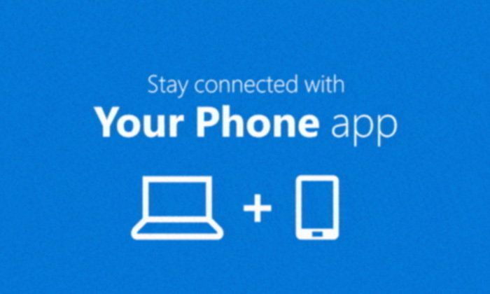

พุทธิพงษ์ ปุณณกันต์ รมว. DE แถลงเชื่อว่า Facebook จะไม่ฟ้องร้องรัฐบาลไทย
จากกรณีรัฐบาลไทยยื่นคำสั่งศาลให้ Facebook ปิดกลุ่มที่มีผู้ติดตามกว่า 1 ล้านคน ทำให้ Facebook เตรียมฟ้องร้องรัฐบาลไทย
วันที่ 26 ส.ค. 2563 นายพุทธิพงษ์ ปุณณกันต์ รัฐมนตรีว่าการกระทรวงดิจิทัลเพื่อเศรษฐกิจและสังคม ได้ตั้งโต๊ะแถลง เกี่ยวกับประเด็นดังกล่าวผ่านสื่อมวลชนว่า สำหรับกระบวนการจัดการคอนเทนต์ที่ไม่เหมาะสมนั้นทำตามกระบวนการยุติธรรมของประเทศไทยอย่างครบถ้วน โดยเมื่อ 15 วันที่แล้ว ทางรัฐบาลได้ทำหนังสือแจ้งเตือนไปยัง Facebook และแพลตฟอร์มอื่น ๆ ว่ามีประมาณ 1129 URL มีความผิดตาม พรบ. คอมพิวเตอร์ ให้แพลตฟอร์มลบคอนเทนต์เหล่านั้นพร้อมกับแนบคำสั่งศาลทั้งหมด ซึ่งทาง Facebook ก็ได้ลบให้อย่างครบถ้วน สำหรับตัวเลขทั้งหมดนั้น มีการแจ้งจากประชาชนเข้ามา 5,943 รายการ จากการคัดกรองพบว่าไม่เข้าข้อกฏหมาย 3,232 รายการ โดยศาลมีคำสั่งแล้ว 1,871 รายการ อยู่ระหว่างดำเนินการ 479 รายการ และอยู่ระหว่างตรวจสอบ 451 รายการ ซึ่งทั้งหมดจะถูกส่งศาลก่อนเพื่อออกคำสั่งตามมา
ในส่วนของการดำเนินการทางกฏหมายของ Facebook ตามข่าวนั้น ตอนนี้ยังไม่ได้เห็นเอกสารอย่างเป็นทางการ ได้ยินเพียงจากสื่อมวลชนและข่าวสารต่าง ๆ ที่แชร์กันทั้งในและต่างประเทศ แต่หากเกิดการดำเนินการทางกฏหมายจริง ๆ เราก็ต้องมีทีมกฏหมายที่จะศึกษา และสู้กันไปตามกระบวนการยุติธรรม คนที่ทำความผิดในประเทศไทย หรือทุกอย่างต้องปฏิบัติตามกฏหมายของประเทศไทย รัฐบาลไม่ได้รังแกใคร ทุกอย่างดำเนินการผ่านคำสั่งศาลทุกอย่าง
โดยนายพุทธิพงษ์เชื่อว่า Facebook จะไม่มีการฟ้องร้องรัฐบาล โดยให้เหตุผลว่า จากที่ผ่านมา 10 วัน ทาง Facebook และแพลตฟอร์มอื่น ๆ ให้ความร่วมมือลบคอนเทนต์ที่ร้องขอทั้งหมด ทางรัฐบาลได้ความร่วมมือเป็นอย่างดี ส่วนหากเกิดการฟ้องร้องก็ต้องรอดูว่าทางแพลตฟอร์มจะฟ้องร้องที่ไหน อย่างไร เพราะยังไม่มีการดำเนินการที่เป็นรูปธรรม ซึ่งรัฐบาลก็พร้อมที่จะดำเนินการตามกฏหมายซึ่งรวมถึงบริษัทต่างประเทศไม่มีการละเว้น
การลงทุนของ Facebookผู้สื่อข่าวได้สอบถามเรื่องการลงทุนของ Facebook โดยการเปิดสำนักงานในประเทศไทย ซึ่งนาย พุทธิพงษ์ ระบุว่า การที่บริษัทข้ามชาติเลือกตัดสินใจลงทุนในประเทศไทยนั้นเป้นสิทธิของบริษัทนั้น ๆ ซึ่งจริง ๆ แพลตฟอร์มต่าง ๆ นั้นก็ไม่ได้ลงทุนแค่ในประเทศไทยเท่านั้น การตัดสินใจจะเข้ามาลงทุนหรือถอน บริษัทนั้น ๆ จะต้องศึกษาสภาพแวดล้อมของประเทศไทยรวมถึงกฏหมายของไทยมาเป็นอย่างดีแล้ว ซึ่งหน้าที่ของเจ้าหน้าที่คือช่วยอำนวยความสะดวกและช่วยดูแลเรื่องการดำเนินการในประเทศไทยให้ การอยู่ภายใต้กฏหมายเดียวกันจะช่วยให้การดำเนินการสะดวกขึ้น
ผมเชื่อว่าถ้ากฏหมายไทยไม่ศักดิ์สิทธิ์ อย่าว่าแต่ Facebook เลยครับ หลาย ๆ บริษัทก็คงไม่มาลงทุน การบังคับครั้งนี้ทำให้โลกรู้ว่าประเทศไทยอยู่ภายใต้กระบวนการยุติธรรม ไม่ได้ละเมิดสิทธิของใคร
ประเด็นขัดต่อสิทธิมนุษยชนนายพุทธิพงษ์ ตอบประเด็นนี้ว่า ขอขอบคุณ Facebook ที่กรุณาลบให้ ซึ่งตนเชื่อว่าหากเป็นการละเมิดจริง Facebook คงไม่ลบให้ โดยก่อนกำหนด 15 วันตามกฏหมายนั้น Facebook ลบให้ทั้งหมด 1129url ตามที่รัฐบาลได้แจ้งไป แสดงให้เห็นว่า Facebook เข้าใจกฏหมายไทย โดยการมีคำสั่งศาลนั้นช่วยให้ Facebook ดำเนินการได้เร็วขึ้นกว่าเดิมด้วย
ทำไม Facebook ถึงมีรีแอกชันเช่นนี้?หลาย ๆ คนอาจสงสัยว่านี่คงไม่ใช่ครั้งแรกที่รัฐบาลร้องขอให้ Facebook ปิดหรือลบเนื้อหาหรือคอนเทนต์ที่ขัดต่อกฏหมาย แต่นี่เป็นครั้งแรกที่ Facebook ออกมาเคลื่อนไหวต่อต้านรัฐบาลไทยอย่างชัดเจน โดยตัวแทนของ Facebook ได้บอกกับ CNN ว่า Facebook เตรียมฟ้องร้องกับรัฐบาลไทยเนื่องจาก
หลังจากพิจารณาอย่างรอบคอบ เฟซบุ๊กจำเป็นต้องจำกัดการเข้าถึงเนื้อหาที่รัฐบาลไทยมองว่าผิดกฎหมาย ซึ่งคำขอนี้ขัดต่อกฎหมายสิทธิมนุษยชนสากล และกระทบสิทธิการแสดงออก เราจึงต้องปกป้องสิทธิของผู้ใช้อินเทอร์เน็ต โดยเตรียมโต้แย้งทางกฎหมายกับคำขอนี้
ซึ่งนาย นายพุทธิพงษ์ ปุณณกันต์ ตอบในประเด็นนี้ว่า เพราะครั้งนี้เราใช้คำสั่งศาล เราอ้างกฎหมายเพื่อบังคับใช้ จากแต่ก่อนที่ Facebook ใช้เวลาจัดการมากกว่านี้ ซึ่งต้องผ่านกระบวนการในบริษัทเยอะ ซึ่งทางรัฐบาลได้ส่งเพิ่มอีก 1,024 รายการ ก็ต้องรอระยะเวลา 15 วันตามกฏหมาย แบ่งเป็น
Facebook: 661 รายการ
YouTube: 289
Twitter: 69
เว็บอื่น ๆ: 5 รายการ
ซึ่งหากทางแพลตฟอร์มไม่ดำเนินการ ทางรัฐบาลก็ต้องดำเนินคดีทางกฏหมายตามพ.ร.บ. คอมพิวเตอร์ มาตรา 27 ซึ่งมีโทษปรับ 200,000 บาท และปรับเพิ่มวันละ 5,000 บาทต่อ URL ที่โดน จนกว่าจะจัดการเรียบร้อย
ส่วนใครที่อยู่ในกลุ่มต่าง ๆ ที่มีเนื้อหาผิดกฏหมาย แต่ดูเฉย ๆ ไม่ได้โพสต์ หรือไม่ได้แชร์ต่อ ถือว่าไม่ได้มีความผิด เพราะไม่ได้นำเข้าข้อมูลที่ผิดกฏหมาย
Firefox For Android เปลี่ยนโฉมใหม่หมด ย้ายช่องใส่ URL ไว้ด้านล่างและปรับปรุงหลายจุดใหม่หมด
สำหรับคนที่ใช้งานเว็บ Browser บนมือถือจากทาง Mozilla ก็มีข่าวดีว่า ตอนนี้ Firefox ได้มีการปรับโฉมใหม่ภายใต้การพัฒนารหัส Fenix ซึ่งมาแทนรุ่นปัจจุบัน โดยมีการปรับปรุงหลากหลายจุดด้วยกัน จนเรียกได้ว่า ไม่เหลือโครงเดิมอีกต่อไป
เริ่มต้นจาก หน้าตาเปลี่ยนพร้อมกับ Dark Mode และเปลี่ยนที่ใส่ URL ของเว็บไซต์ มาอยู่ที่ด้านล่างทำให้สามารถกดได้ง่ายมากขึ้น
ฟีเจอร์ Collections จะอยู่กึ่งกลางเลือกได้ว่าเก็บแบบถาวร หรือจะเป็น Tab ที่จะกินทรัพยากร เหมาะกับเว็บไซต์ที่ใช้เฉพาะกิจ
ฟีเจอร์ความเป็นส่วนตัว โดยมีการตรวจบล๊อกโฆษณาและตามรอยที่ดีกว่ารุ่นเดิมและใช้กับ Desktop ถือว่าดีขึ้น
สำหรับคนที่สนใจสามารถโหลดผ่าน Google Play Store ได้แล้ววันนี้และจะต้องใช้ Android เวอร์ชั่น 4.1 ขึ้นไปถึงจะสามารถ Upload ได้
Google Adsense จะปิด Apps บน iOS และ Android บีบให้ไปใช้งานบนเว็บไซต์เหมือนเดิม
Google เตรียมปิดให้บริการ Adsense บนเวอร์ชั่น Application ในมือถือทั้ง Android และ iOS ไปใช้ในเวอร์ชั่น Mobile Apps ตามเดิม
โดย Google ได้เปิดเผยว่า ผู้ใช้งาน Google Adsense มีจำนวน 1 ใน 3 ที่ใช้มือถือในการดูข้อมูลต่างๆ ทำให้ Google หันมาพัฒนา Mobile Website ของ Adsense ให้ดีขึ้น
อย่างไรก็ตาม Application ของ Google Adsense ยังคงใช้ได้ต่อไปจนถึงสิ้นปี 2019 ต้องลุ้นกันว่าจะมีลักษณะการทำงานของ Google Adsense บนเว็บไซต์อย่างไรต่อไป
Google เริ่มใช้ระบบสแกนลายนิ้วมือ ช่วยในการ Sign in ใน Apps ต่างๆ บนมือถือ Android
ถึงแม้ระบบสแกนลายนิ้วมือของ Android กันมานานแล้วแต่ก็ยังไม่สามารถใช้ระบบสแกนลายนิ้วมือในการเข้าระบบของ Google Apps ได้เลย ล่าสุดฝันที่เป็นจริงของคนใช้ Android ก็มาถึง เมื่อ Google ประกาศใช้ระบบสแกนลายนิ้วมือในการ Sign in Apps ของ Google ผ่าน Android ได้
โดยการอัปเดทล่าสุดของ Apps Google จะมีให้เลือกระหว่างการใส่รหัสผ่าน หรือ ใช้ระบบสแกนลายนิ้วมือได้ แต่ว่า อย่างไรก็ตามฟีเจอร์นี้จะรองรับ Android 7 Nougat ขึ้นไปเท่านั้นและยังรองรับมาตรฐาน FIDO2, W3C WebAuthn และ FIDO CTAP ถือว่ามากพอสมควร
แต่อนาคตไม่ได้รองรับแค่ Apps ของ Google ต้องลุ้นกันต่อไปว่า Apps อื่นๆ จะเริ่มมาใช้บ้างหรือไม่
Windows 10 สามารถเปิดโปรแกรมบนมือถือ Samsung ในระบบปฏิบัติการ Android เริ่มใน Galaxy Note20
หลังจากการเปิดตัว Samsung Galaxy Note20 Series มีการเปิดตัวฟีเจอร์ใหม่จาก Microsoft นั่นคือ Your Phone ที่สามารถให้ Windows 10 สามารถเปิดโปรแกรม จากมือถือแสดงผลบนคอมพิวเตอร์ได้
ซึ่งการเปิดโปรแกรม แสดงผล Taskbar ยังสามารถทำงานร่วมกับโปรแกรมอื่นๆ ได้และยังสามารถใช้งาน Mouse, Keyboard และสามารถใช้งานทัชสกรีนได้ด้วย
แต่กว่าจะใช้งานได้นอกจาก Windows 10 จะต้องอัปเดต Your Phone แล้ว แต่มือถือ Android ของ Samsung ต้องใช้ระบบปฏิบัติการ Android 9 (Pie) และการเชื่อมต่อจะต้องใช้กับ WiFi เดียวกันเท่านั้น แต่ว่าหน้าจอนั้นไม่สามารถตั้งค่าให้หน้าจอใหญ่ได้ จะแสดงได้ในแบบมือถือเท่านั้น
ใครถือมือถือ Samsung ที่จะเป็น Android 9 และรองรับฟีเจอร์ Link To Windows อย่าลืมลองฟีเจอร์นี้กับคอมพิวเตอร์ของคุณนะครับ